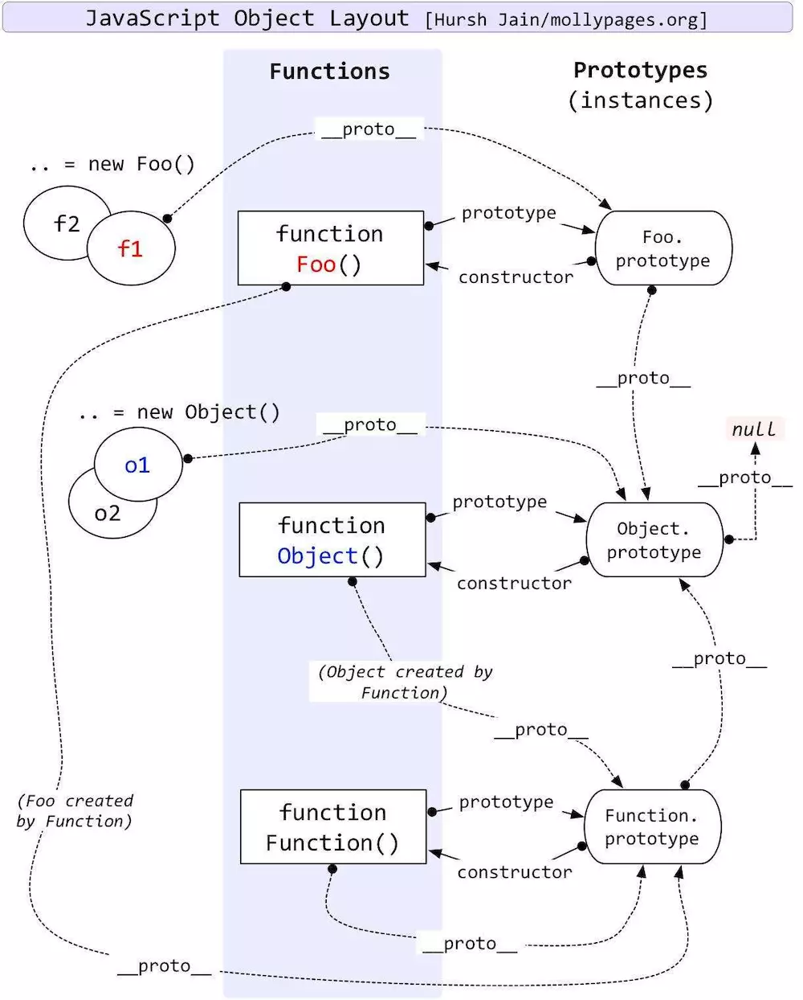

<!DOCTYPE html>
<html lang=>
  <head><meta name="generator" content="Hexo 3.9.0">
  <meta charset="UTF-8">
  <meta name="viewport" content="width=device-width, initial-scale=1, maximum-scale=1">
  <meta http-equiv="X-UA-Compatible" content="ie=edge">
  <meta name="description" content>
  <meta name="keywords" content>
  
    <link rel="icon" href>
  
    
  <title>你还说你不懂原型链 | qqqdu&#39;s blog</title>
  <link rel="stylesheet" href="/style.css">
  <link rel="stylesheet" href="/lib/jquery.fancybox.min.css">
  <link href="https://maxcdn.bootstrapcdn.com/font-awesome/4.7.0/css/font-awesome.min.css">
</head>

<body>
  <header>
  <div class="header-container">
    <a class='logo' href="/">
      <span>qqqdu's blog</span>
    </a>
    <ul class="right-header">
      
        <li class="nav-item">
          
            <a href="/" class="item-link">首页</a>
          
        </li>
      
        <li class="nav-item">
          
            <a href="/about" class="item-link">关于</a>
          
        </li>
      
        <li class="nav-item">
          
            <a href="/archives" class="item-link">归档</a>
          
        </li>
      
        <li class="nav-item">
          
            <a href="/tags" class="item-link">标签</a>
          
        </li>
      
    </ul>
  </div>
</header>

  <main id='post'>
  <div class="content">
    <article>
        <section class="content markdown-body">
          <h1>你还说你不懂原型链</h1>
          <div class='post-meta'>
            <i class="fa fa-calendar" aria-hidden="true"></i> <time>2019/08/16</time>
            
            
          </div>
          <p>又在炒冷饭，讲什么原型链  </p>
<h1 id="原型链"><a href="#原型链" class="headerlink" title="原型链"></a>原型链</h1><h2 id="prototype-是啥玩意儿"><a href="#prototype-是啥玩意儿" class="headerlink" title="prototype 是啥玩意儿"></a>prototype 是啥玩意儿</h2><p>每个函数，都有一个prototype  </p>
<h2 id="proto-又是啥玩意儿"><a href="#proto-又是啥玩意儿" class="headerlink" title="__proto__ 又是啥玩意儿"></a><code>__proto__</code> 又是啥玩意儿</h2><p>很多人看到 <code>__proto__</code> 就会想到下面这张图，有的时候，知识抽象成图表反而不太明了，必须得知道对应关系，再结合图表来看，就会倍感清晰。<br>跟着我看完，如果还不清晰，你来砍我？？？</p>
<h3 id="神图"><a href="#神图" class="headerlink" title="神图"></a>神图</h3><p>不要一上来就给别人一张图<br>  </p>
<h3 id="规律"><a href="#规律" class="headerlink" title="规律"></a>规律</h3><p>首先你需要打开谷歌浏览器的控制台，依次执行以下代码，看看其返回值，总结出一些规律。</p>
<pre><code class="javascript"><span class="function"><span class="keyword">function</span> <span class="title">fn</span>(<span class="params"></span>) </span>{} 
<span class="keyword">var</span> f = <span class="keyword">new</span> fn() 
f.__proto__  <span class="comment">// 看看这个对象里面有啥  </span>
<span class="comment">/*</span>
<span class="comment">上面那行代码返回一个对象，constructor 指向其构造函数， </span>
<span class="comment">又有一个 __proto__ 指向 'Object'，记住这个Object的结构，待会要考</span>
<span class="comment">{constructor: ƒ}</span>
<span class="comment">constructor: ƒ fn()</span>
<span class="comment">__proto__: Object</span>
<span class="comment">*/</span>
fn.prototype
<span class="comment">/* </span>
<span class="comment">再看看这行代码，好神奇耶，看起来跟 f.__proto__ 相等，</span>
<span class="comment">所以，我们得出第一个“规律”</span>
<span class="comment">f.__proto__ === fn.prototype  </span>
<span class="comment">你试着验证这条规律，发现它是对的，我们用文字总结：</span>
<span class="comment">规律1，对象的__proto__总是指向它的构造函数的prototype，也就是原型链</span>
<span class="comment">*/</span>
</code></pre>
<p>那么问题来了，在js的世界里，一切皆对象，上面的 fn ，应该也是对象。再打开你的控制台，输入以下代码</p>
<pre><code class="javascript">fn.__proto__  
<span class="comment">// 奇怪，跟上次长得不一样，控制台打印出了看不懂的代码 'ƒ () { [native code] }'  </span>
<span class="comment">// 再想想上个规律，对象的—__proto__总指向其构造函数，那 fn 的构造函数是？</span>
<span class="built_in">Function</span>.prototype
<span class="comment">// 机智的你，迫不及待的想 用 === 把两个值进行比较，你没猜错，是 true</span>
<span class="comment">// 于是我们有了规律2，虽然它是规律1 的子集，但还是先总结起来，后面有用  </span>
<span class="comment">// 规律2，函数的__proto__ 总是指向 Function 的 原型链，并且还是一个 </span>
<span class="comment">// ƒ () { [native code] }</span>
</code></pre>
<p>emmm，问题又来了，上面的代码片段打印出 ƒ () { [native code] }， 虽然它是原生代码，但它还是隐喻我们，它是一个 funtion，好奇的我们又想知道，它到底是什么玩意儿？  </p>
<pre><code class="javascript"><span class="keyword">typeof</span> <span class="built_in">Function</span>.prototype
<span class="comment">// 'function' 果然，它还是函数！！！，我们的规律2可以用起来了，</span>
<span class="comment">// 函数的 __proto__ 肯定是指向 Function 的原型链  </span>
<span class="built_in">Function</span>.prototype.__proto__ === <span class="built_in">Function</span>.prototype  
<span class="comment">// false  </span>
<span class="comment">// ???</span>
<span class="comment">// ???</span>
<span class="comment">// 你在逗我？</span>
<span class="comment">// 别着急，我们 打印出来看看</span>
<span class="built_in">Function</span>.prototype.__proto__  
<span class="comment">// 你会发现，它是一个对象，并且其 constructor 指向了 Object 构造函数。  </span>
<span class="comment">// 它？会不会是 Object.prototype 呢？  </span>
<span class="built_in">Function</span>.prototype.__proto__ === <span class="built_in">Object</span>.prototype
<span class="comment">// 诚不欺我，果然是。可是为啥要推翻我们的规律，</span>
<span class="comment">// 硬生生的将它指给 Object.prototype呢  </span>
<span class="comment">// 再回头看看代码，其实它循环引用的。啥玩意儿是循环引用呢？  </span>
<span class="keyword">let</span> a = {}
<span class="keyword">let</span> b = {}
a.b = a  
<span class="comment">// 这就是循环引用，子子孙孙无穷尽也，为了规避这种情况，浏览器特意做了如上操作，于是我们又有了规律 3</span>
<span class="comment">// 规律3: Function 原型链的 __proto__ 指向了 Object 的 原型链，是为了规避循环引用。</span>
</code></pre>
<p>我们总结了三种规律，到头了吗，Function 到头了，Object 还没有<br>让我们继续探究<br>规律3 是针对 Function 的原型链的，那 Object 的原型链是啥</p>
<pre><code class="javascript"><span class="keyword">typeof</span> <span class="built_in">Object</span>.prototype
<span class="comment">// 快看，是对象，我们的规律1派上用场了，再回头看看规律1  </span>
<span class="comment">// 既然是对象，那其 __proto__ 肯定指向 Object.prototype 了，机智如我  </span>
<span class="built_in">Object</span>.prototype.__proto__ === <span class="built_in">Object</span>.prototype
<span class="comment">// false</span>
<span class="comment">// ?</span>
<span class="comment">// ???</span>
<span class="comment">// 经过上次 Function.prototype 的洗礼，我们一眼就发现了循环引用的问题</span>
<span class="comment">// 是的，为了避免这种问题，浏览器让 Object.prototype.__proto__ 指向了 null</span>
<span class="comment">// 让我们的原型链，有了“终点”，有了“根”。</span>
<span class="comment">// 我们的规律4也出炉了 Object.prototype 的 __proto__ 指向了 null</span>
</code></pre>
<h3 id="proto-四条规律"><a href="#proto-四条规律" class="headerlink" title="__proto__ 四条规律"></a><code>__proto__</code> 四条规律</h3><ul>
<li>对象的 <code>__proto__</code> 总是指向它的构造函数的prototype，也就是原型链  </li>
<li>函数的 <code>__proto__</code> 总是指向 Function 的 原型链，并且还是一个  native code function  </li>
<li>Function 原型链的 <code>__proto__</code> 指向了 Object 的 原型链，是为了规避循环引用。  </li>
<li>Object.prototype 的 <code>__proto__</code> 指向了 null，也是为了规避循环引用  </li>
</ul>
<ul>
<li>当你彻底了解这四条规律的时候，尝试去看最开始那张神图，你会发现，so easy～～ *  </li>
</ul>
<h3 id="好玩的代码"><a href="#好玩的代码" class="headerlink" title="好玩的代码"></a>好玩的代码</h3><pre><code class="javascript"><span class="built_in">Object</span> <span class="keyword">instanceof</span> <span class="built_in">Function</span>         <span class="comment">// true</span>
<span class="built_in">Function</span> <span class="keyword">instanceof</span> <span class="built_in">Object</span>         <span class="comment">// true</span>

<span class="built_in">Object</span> <span class="keyword">instanceof</span> <span class="built_in">Object</span>             <span class="comment">// true</span>
<span class="built_in">Function</span> <span class="keyword">instanceof</span> <span class="built_in">Function</span>     <span class="comment">// true</span>
</code></pre>
<h4 id="instanceof"><a href="#instanceof" class="headerlink" title="instanceof"></a>instanceof</h4><p>instanceof 运算符用来测试一个对象在其原型链中是否存在一个构造函数的 prototype 属性。<br>原型链的魅力来了。<br>首先一切皆对象，那 instanceof 大家都可以用。  </p>
<p>1， <code>Object instanceof Function</code><br>代表着在 <code>Object</code> 的原型链中，存在一个 <code>Function.prototype</code><br><code>Object.__proto__ === Function.prototype</code><br>true 通过  </p>
<p>2， <code>Function instanceof Object</code><br>代表着在 <code>Function</code>的原型链中，存在一个 <code>Object.prototype</code>，<br>那么：<br><code>Function.__proto__ === Object.prototype</code><br>是false，未通过，怎么办呢，继续往上一个链条找。<br><code>Function.prototype.__proto__ === Object.prototype</code><br>true 通过  </p>
<p>3，<code>Object instanceof Object</code><br>代表着在 <code>Object</code> 的原型链中，存在一个 <code>Object.prototype</code><br><code>Object.__proto__ === Object.prototype</code><br>false，怎么办呢，继续往上一个链条找。<br><code>Object.__proto__ === Function.prototype</code> true<br><code>Function.prototype.__proto__ === Object.prototype</code><br>true 通过</p>
<p>4，<code>Function instanceof Function</code><br>代表着在 <code>Function</code>的原型链中，存在一个 <code>Function.prototype</code>，<br>那么：<br><code>Function.__proto__ === Function.prototype</code><br>true 通过  </p>
<h3 id="完结撒花"><a href="#完结撒花" class="headerlink" title="完结撒花"></a>完结撒花</h3><p>  </p>
<p>别忘了再看一眼开局的图  </p>
<h3 id="该撒花了？"><a href="#该撒花了？" class="headerlink" title="该撒花了？"></a>该撒花了？</h3><p>不！还不是时候。你以为你懂了，其实。  </p>
<p></p>
<h3 id="“鸡生蛋，蛋生鸡”的哲学问题"><a href="#“鸡生蛋，蛋生鸡”的哲学问题" class="headerlink" title="“鸡生蛋，蛋生鸡”的哲学问题"></a>“鸡生蛋，蛋生鸡”的哲学问题</h3><p>🥚-&gt; 🐔?<br>🐔-&gt; 🥚?<br>我们注意到<br><code>Function.prototype === Function.__proto__</code> </p>
<p>这是否说明了 Function 的构造函数是 Function,是谁生了我？我又生了谁？是 我生了我。  </p>
<p>这不仅是个哲学问题，还是个TMD伦理问题！  </p>
<p>按照 <code>__proto__</code> 的定义，它就指向了其构造函数的原型，那 Function 的 构造函数是 Function 肯定是没问题的。别问为什么，标准就这么规定的，那么，第一个 Function 是谁创造的？？？  </p>
<p>毫无疑问，这是一个无聊的问题，但很多人深陷其中不可自拔，就像哲学系里那一个个掉光头发的老头一样，苦思冥想。不过还好，这个问题没有 <code>鸡生蛋</code> 那么复杂。我们应该可以在头发掉光前理解它。(是吗？)  </p>
<h3 id="hax-的观点"><a href="#hax-的观点" class="headerlink" title="hax 的观点"></a>hax 的观点</h3><p>贺老对于这个问题给出了两个答案，可以说是，也可以说不是。<br>是：  </p>
<blockquote>
<p>hax: 按照JS中“实例”的定义，a 是 b 的实例即 a instanceof b 为 true，默认判断条件就是 b.prototype 在 a 的原型链上。而 Function instanceof Function 为 true，本质上即 Object.getPrototypeOf(Function) === Function.prototype，正符合此定义。  </p>
</blockquote>
<p>否  </p>
<blockquote>
<p>hax:<br>Function 是 built-in 的对象，也就是并不存在“Function对象由Function构造函数创建”这样显然会造成鸡生蛋蛋生鸡的问题。实际上，当你直接写一个函数时（如 function f() {} 或 x =&gt; x），也不存在调用 Function 构造器，只有在你显式调用 Function 构造器时（如 new Function(‘x’, ‘return x’) ）才有。</p>
</blockquote>
<p><a href="https://www.zhihu.com/question/31333084/answer/152086175" target="_blank" rel="noopener">https://www.zhihu.com/question/31333084/answer/152086175</a></p>
<h3 id="结束"><a href="#结束" class="headerlink" title="结束"></a>结束</h3><p>为什么结束的这么突然，因为鸡生蛋这个问题意义不大，甚至是否理解原型链在大多数情况也影响不到你的开发，但当你了解其根本的时候，才会引发更多 “有趣” 的讨论，当你看源码的时候，才不至于昏昏欲睡。  </p>
<p>终极问题：当你是一个面试官的时候，你会问原型链吗？</p>

        </section>
    </article>
    
        
  </div>
  <aside>
    
    <div class="toc-container">
        <h1>目录</h1>
        <div class="content">
            <ol class="toc"><li class="toc-item toc-level-1"><a class="toc-link" href="#原型链"><span class="toc-number">1.</span> <span class="toc-text">原型链</span></a><ol class="toc-child"><li class="toc-item toc-level-2"><a class="toc-link" href="#prototype-是啥玩意儿"><span class="toc-number">1.1.</span> <span class="toc-text">prototype 是啥玩意儿</span></a></li><li class="toc-item toc-level-2"><a class="toc-link" href="#proto-又是啥玩意儿"><span class="toc-number">1.2.</span> <span class="toc-text">__proto__ 又是啥玩意儿</span></a><ol class="toc-child"><li class="toc-item toc-level-3"><a class="toc-link" href="#神图"><span class="toc-number">1.2.1.</span> <span class="toc-text">神图</span></a></li><li class="toc-item toc-level-3"><a class="toc-link" href="#规律"><span class="toc-number">1.2.2.</span> <span class="toc-text">规律</span></a></li><li class="toc-item toc-level-3"><a class="toc-link" href="#proto-四条规律"><span class="toc-number">1.2.3.</span> <span class="toc-text">__proto__ 四条规律</span></a></li><li class="toc-item toc-level-3"><a class="toc-link" href="#好玩的代码"><span class="toc-number">1.2.4.</span> <span class="toc-text">好玩的代码</span></a><ol class="toc-child"><li class="toc-item toc-level-4"><a class="toc-link" href="#instanceof"><span class="toc-number">1.2.4.1.</span> <span class="toc-text">instanceof</span></a></li></ol></li><li class="toc-item toc-level-3"><a class="toc-link" href="#完结撒花"><span class="toc-number">1.2.5.</span> <span class="toc-text">完结撒花</span></a></li><li class="toc-item toc-level-3"><a class="toc-link" href="#该撒花了？"><span class="toc-number">1.2.6.</span> <span class="toc-text">该撒花了？</span></a></li><li class="toc-item toc-level-3"><a class="toc-link" href="#“鸡生蛋，蛋生鸡”的哲学问题"><span class="toc-number">1.2.7.</span> <span class="toc-text">“鸡生蛋，蛋生鸡”的哲学问题</span></a></li><li class="toc-item toc-level-3"><a class="toc-link" href="#hax-的观点"><span class="toc-number">1.2.8.</span> <span class="toc-text">hax 的观点</span></a></li><li class="toc-item toc-level-3"><a class="toc-link" href="#结束"><span class="toc-number">1.2.9.</span> <span class="toc-text">结束</span></a></li></ol></li></ol></li></ol>
        </div>
    </div>
    
  </aside>
</main>


  <footer>
  <div class="copyright">
    <div>
      &copy; 2021 | Powered by <a href="https://hexo.io" target="_blank">Hexo</a>&nbsp
    </div>
    <div>
      Theme by <a href="https://github.com/lewis-geek/hexo-theme-Aath" target="_blank">Aath</a>
    </div>
  </div>
</footer>


<script src="https://cdn.bootcss.com/jquery/3.2.1/jquery.min.js"></script>
<script src="/lib/in-view.min.js"></script>
<script src="/lib/lodash.min.js"></script>
<script>
  var isDown = true
  var oldY = 0
  inView.offset(50)

  document.body.addEventListener('touchstart', function(){});
  
  window.addEventListener('scroll', _.throttle(e => {
    var currentY = window.scrollY
    if((oldY - currentY) < 0) {
      isDown = true
    } else {
      isDown = false
    }
    oldY = currentY
  }, 250))

  $("article img").each(function() {
      var strA = "<a data-fancybox='gallery' href='" + this.src + "'></a>";
      $(this).wrapAll(strA);
  });

  $('.toc-link').each(function() {
      var href = $(this).attr("href");
      
      inView(href).on('exit', () => {
        if (isDown) {
          handleActive(href)
        }
      })

      inView(href).on('enter', () => {
        if (!isDown) {
          handleActive(href)
        }
      })

      this.onclick = function(e) {
        var pos = $(href).offset().top - 10;
        $("html,body").animate({scrollTop: pos}, 300);
        setTimeout(() => {
          handleActive(href)
        }, 350)
        return false
      }
  })

  function handleActive(href) {
    document.querySelectorAll('.toc-link').forEach(elm => {
      elm.classList.remove('active')
    })
    document.querySelector(".toc [href='"+ href +"']").classList.add('active')
  }
</script>
<script src="/lib/jquery.fancybox.min.js"></script>


</body>
</html>
